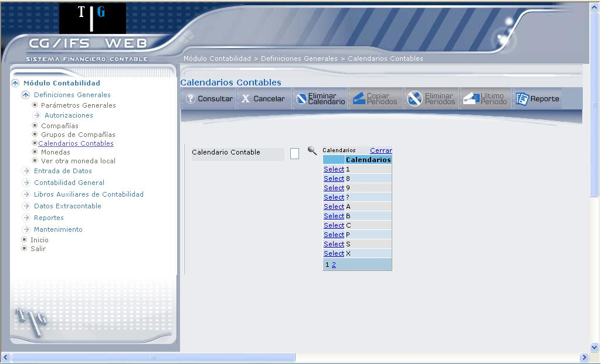
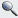
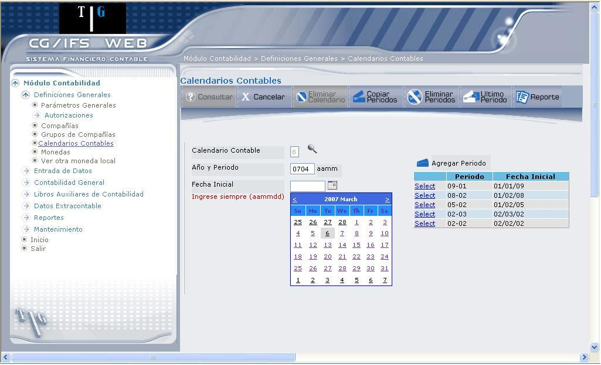
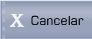

Tabla de Calendarios Contables
Permite definir Periodos contables en Calendarios Contables, que son los calendarios con los que trabajará cada Compañía.
El acceso a esta opción requiere que el usuario esté autorizado al Proceso de Actualización Tabla de Calendarios Contables.
Para trabajar con CG/Web es necesario definir al menos un Calendario Contable, pero no existe límite alguno en la cantidad de Calendarios que pueden existir en una instalación. Así, se puede encontrar una instalación en la que todas sus Compañías utilicen la misma tabla de Calendario Contable y otra instalación en la que cada Compañía utilice una tabla distinta.
Cada compañía únicamente puede tener asignada una tabla. Cada tabla puede contener tantos periodos como se desee, de uno o varios ejercicios o años contables, pudiendo tener hasta 99 periodos por año. Los Periodos se pueden crear todos a la vez o ir creándolos a medida que se precise realizar movimientos en ellos.
Cualquier fecha puede corresponder al inicio de un Periodo, considerándose como fecha final de dicho Periodo al día anterior a la fecha inicial del Periodo siguiente. Un Periodo debe incluir por lo menos un día.
En operaciones como apertura, cierre de ejercicio, ajustes, etc. es beneficioso utilizar Periodos específicos con la ventaja de no desvirtuar los asientos netos de las cuentas dentro de los Periodos normales.
Al seleccionar la opción ´ Tabla de Calendarios Contables ´, despliega la pantalla que muestra 1.25.

Figura 1. Tabla de Calendarios Contables.
Al ingresar a esta opción debe escoger el Calendario Contable (donde se va crear o modificar Periodos contables):
Calendario Contable:
Permite escoger el calendario contable, donde se creará periodos contables, lo puede realizar de las siguientes formas:
- Digite el código del Calendario Contable y presione la tecla ENTER o el botón Consultar.
- Seleccione el Periodo Contable, presionando el ícono () y dé clic en el vínculo Select.
Una vez que haya escogido el Calendario Contable se despliega la información mostrada en 1.26.

Figura 1. Ingreso de Calendario Contable.
La lista de periodos que se encuentran en el calendario contable que seleccionó, se puede observar donde indica la flecha A.
A continuación se describen los campos que deberá ingresar para crear periodos contables:
Año y Periodo:
Corresponde al Año y Periodo Contable al que pertenecerán los Comprobantes con fecha posterior o igual a la indicada en el campo “Fecha Inicial” y con Fecha Anterior a la de inicio del próximo Periodo Contable.
Digite el año y periodo que desea registrar, en el formato aamm. Por ejemplo, si se digita 0704 significa que ingresa el año 2007 y el periodo 04 (Abril)
Fecha Inicial:
Digite del periodo, en el formato aammdd, caso contrario presione el ícono, el mismo que presenta un calendario como indica la flecha B (Figura 1.26). Por ejemplo, al digitar la fecha: 070405 significa que ingresa el año 2007, el mes 04 (Abril) y el día 05.
Por último presione el botón “Agregar Periodo”, el mismo que permite agregar el periodo en la lista de periodos (donde indica la flecha A). Una vez creado el periodo, podrá realizar diferentes acciones con los botones que se explican a continuación:
BOTONES

Created with the Personal Edition of HelpNDoc: What is a Help Authoring tool?